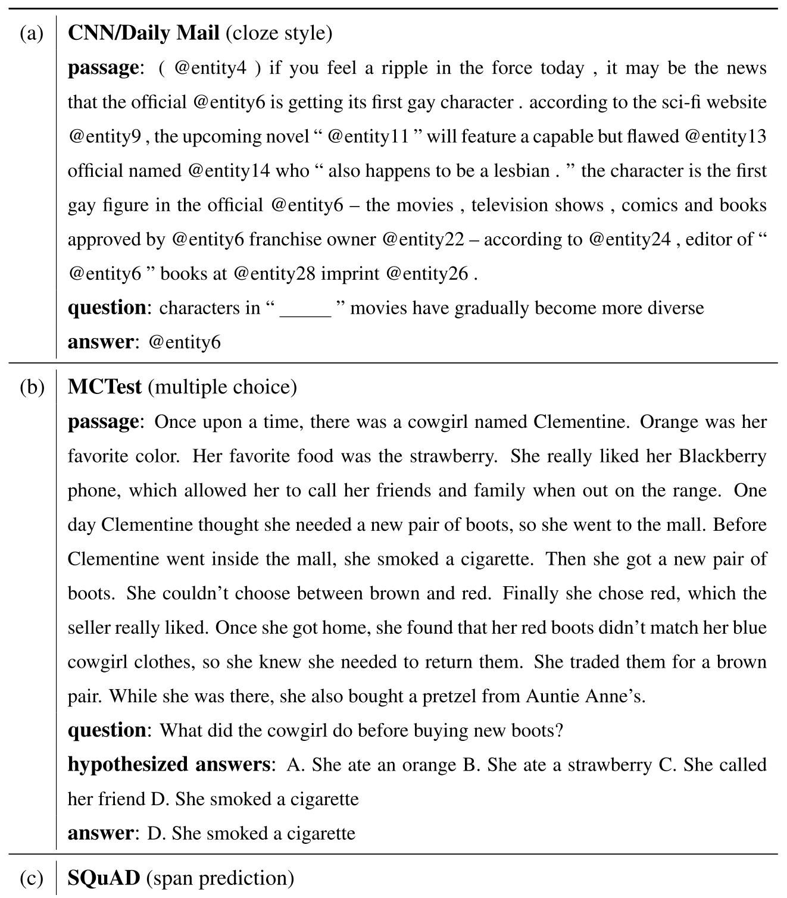
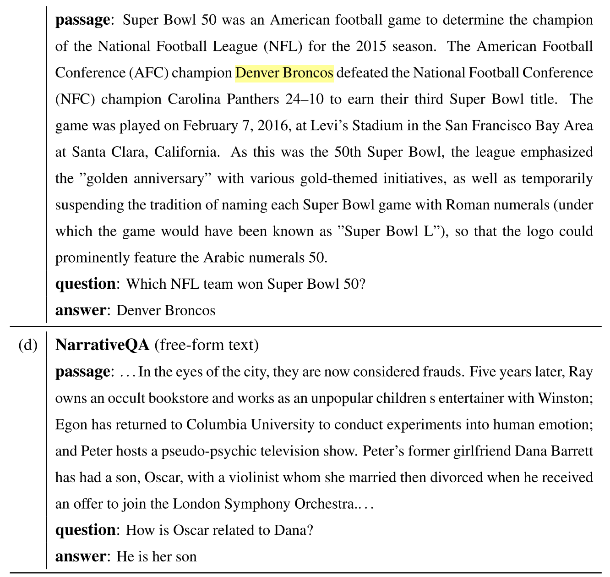
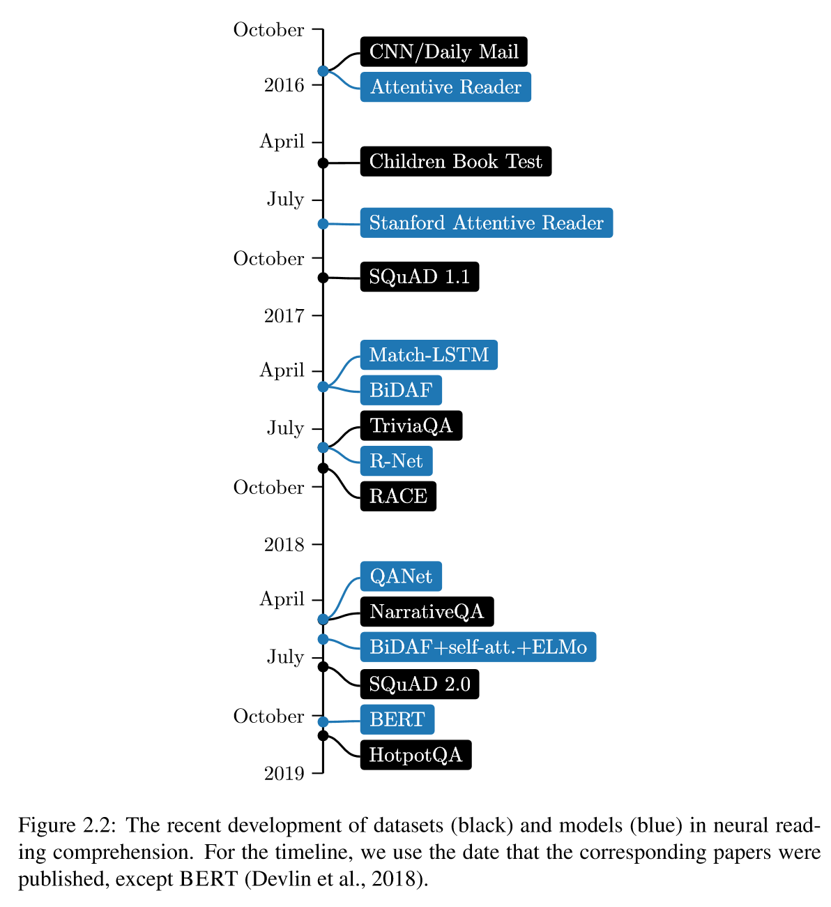
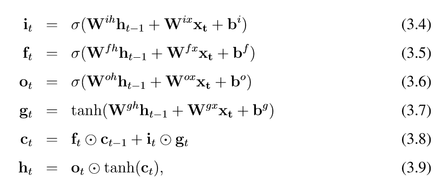

最近想要了解一下NLP的研究，决定先来读一下Danqi Chen老师的博士论文，做一个笔记啥的。
Abstract
- 阅读理解问题：怎么构建能够阅读一篇文字且能回答相关的理解性问题的系统
- 可用于衡量机器对人类语言理解程度
- 这样的系统可应用于QA或者对话系统
- 这篇文章讲的都是neural的方法
- 两部分：
- 涵盖神经阅读理解的本质，介绍自己这方面的work；了解模型实际上学到了什么，解决当前问题需要多大的理解深度；对该领域做了总结和展望。
- 如何在其基础上构建实际应用，一是与信息检索结合搞大规模开放领域QA系统的DrQA；二是从当前单轮的span-based的阅读理解模型构建对话问答系统的CoQA。
Introduction
- 文本理解的几个任务
- part-of-speech tagging 词性标注
- named entity recognition (NER)命名实体识别
- syntactic parsing 句性分析（语法结构，词间关系等）
- coreference resolution指称关系解析
- 阅读理解任务可以衡量更深层次的自然语言理解程度；1970s已经被意识到，但是最近才有比较大的进展；主要是得益于大规模监督数据集和神经阅读理解模型
- 主题1基础：现代神经阅读理解的本质：问题的形成、系统的构建模块和关键部分、哪些方面可以超越哪些方面依然落后
- 主题2应用：高性能阅读理解系统在QA和对话系统中应用
- contributions:
- ==Stanford Attentive Reader==模型
- 学到了什么，理解的深度：与传统的基于特征的分类器相比，神经网络模型更加擅长词汇匹配和释义，但是系统推理能力现在仍有限
- 将神经阅读理解作为开放领域QA核心部分的研究方向，在DRQA中实现了这一想法
- 着手解决会话问题的回答，提出了COQA挑战
An Overview of Reading Comprehension
历史
早期系统
- 1970s开始意识到这个任务的重要性
- QUANLM, Lenhnert(1977)，在脚本和计划上建模人类故事的理解；设计了一个问答理论，专注于现实问题以及上下文对回答问题的重要性；系统较小，受限于手动编写的脚本，很难泛用到其他领域。
- 1990s末，Hirschman等设计了一个阅读理解数据集，ANLP/NAACL在2000年举办了一个阅读理解相关的workshop；数据集由60个故事作为训练集，60个作为测试集组成，要求回答who what when where why的问题，只需要返回包含正确答案的句子。这一阶段的系统主要有基于规则的词袋方法+浅层语言处理（stemming, 语义类识别和代词解析）的Deep Read，以及使用手动生成的基于词汇和语义的对应关系的规则的Quarc系统或者两者的混合；取得了30%~40%的accuracy。
机器学习的方法
- 2013-2015，开始将阅读理解规范化为一个监督学习问题：样本形式为三元组；让统计模型学习一个由段落和问题到答案的映射.
- 两个该时期的数据集:
- MCTest: 660个故事, 每个故事4个4项单选题
- 原paper中提出了几个基于规则的, 不利用训练数据的baselines:
- 启发式滑窗: 度量问题、答案和窗口单词之间的带权重叠overlap或距离信息
- 将每一对问题答案转换成一个语句来跑一个现成的文本蕴含系统（使用前提与假设之间的蕴含关系您行推理）
- 后来的模型大多建立在max-margin学习框架上，使用了丰富的人工设计的语言特征如语法依赖、语义框架、指称关系解析、话语关系和词嵌入；在MC500 portion上表现从63%提升到了70%
- 原paper中提出了几个基于规则的, 不利用训练数据的baselines:
- ProcessBank: 根据描述生物过程的段落回答二选一问题, 要求理解过程中实体与事件的关系, 200个段落585个问题
- 原论文中使用了一个统计学习模型，首先预测过程的结构，然后把问题映射到能够用该结构执行的正式查询，66.7%的准确率。
- MCTest: 660个故事, 每个故事4个4项单选题
深度学习的方法
- 2015年，DeepMind的Hermann等人提出了一个创建学习阅读理解模型的大规模监督训练数据集的解决方案，也提出了一个NN模型——一个基于注意力机制的LSTM模型叫The Attentive Reader，这个模型很大程度上优于符号化的NLP方法（在CNN数据集上取得63.8%，符号化系统取得最高50.9%）
- 构建数据集的方法：CNN(指的是fake news的那个CNN)和每日邮报附带了一些要点，将这些要点的实体用抽象的标记表示，在文章中用占位符替换这些实体然后形成一个完形填空式问题；这样可以几乎零成本地生成大量样本
- 2016年，CDQ老师发现了这个CNN数据集，他们的The Stanford Attentive Reader取得了72.4%的成绩
- 再识别词汇匹配和释义上比传统的基于特征的分类器更好
- 得出了数据集由于创建方式和指称上的错误似乎有噪声，有局限性的结论
- 对此Rajpurkar等在2016收集了The Stanford Question Answering Dataset（SQUAD），由536篇wiki文章中的107785对问答组成，由大众工作者提出，每个问题的答案都是相应阅读文章的文本；这是第一个大规模自然语言阅读理解数据集，表现最好的取得了91.8%的F1值，超过了人类(91.2%)
- 目前在SQUAD上表现好的系统都是端到端模型或者深度学习模型，这些模型一般把文章和问题中的每个单词表示为一个密集的向量，经过几个建模或者交互层，最后得到预测；这些模型被叫做神经阅读理解模型，下面是他们的一些优势：
- 不依赖于下游的语言特性（比如依赖解析、指称解析）把所有特性放在端到端框架立独立学习，避免语言注释里的噪音，再利用特征上更加灵活
- 传统符号化NLP系统特征过于稀疏，泛化能力差；利用低维的密集词嵌入向量，再共享相似词之间的统计强度，可以缓解特征系数的问题
- 不需要手工构造大量的特征，专注于设计神经网络架构即可
- SQUAD毕竟是个简单的任务，也有局限性
- 其他的一些数据集:TRIVIAQA (Joshi et al ., 2017)，RACE(Lai et al ., 2017)，QANGAROO (Welbl et al ., 2018)，NARRATIVEQA (Kocisky et al)，MULTIRC (Khashabi et al.，2018)、SQuAD 2.0 (Rajpurkar et al.，2018)、HOTPOTQA (Yang et al.，2018)；其中包括独立于段落的问题、需要多个句子或文档回答的问题、基于长文档的问题或不能从文章回答的问题；其中大部分还没有解决
任务的定义
问题公式化描述
可以把阅读理解任务公式化为一个监督学习问题：给定一组训练样本，目标为学习一个预测器以一段文字和对应的问题作为输入，以答案$a$作为输出。
令, 分别为文章和问题长度，, , 是预定义的词典；这里不妨只考虑一段的情况。
不同类型的答案对应着不同形式的，我们大致可以将现在的阅读理解任务分为四类：
- Cloze style 完形填空：从一个预定义的或者整个中选择
- Multiple choice 选择题：
- Span prediction 范围预测：也叫做提取QA任务, 答案必须是文章中的一个范围, 可以被表示为, 答案字符串与相对应
- Free-form answer自由形式回答：


评估
- 对于单选题与完型填空题, 只要用普通意义上的准确率即可评估
对于范围预测span prediction:
- Exact match(EM) 如果完全符合则1.0, 否则0.0
- F1 score 计算预测答案与实际答案之间的平均单词重叠, 其中这两个答案被当作词袋处理:
free-form answer没有统一的评估标准; 常见的方法是在自然语言生成任务中(如翻译, 概述)使用标准的评估指标, 包括BLEU, Meteor, ROUGE.
阅读理解 vs. QA
阅读理解和QA之间的关系很紧密, 可以把阅读理解看作QA的一个实例因为它本质上是一个建立在一小篇文本上的QA问题; 但是两者的最终目标所强调的东西不同
- QA问题的最终目标是构建能够自动回答人类提出的问题的计算机系统, 不管他们基于什么样的来源. 大部分QA的工作都研究以下几件事情:
- 如何搜索并识别相关的资源
- 如何从不同的信息片中整合出答案
- 学习人们在现实中常常问到的问题种类
- 阅读理解则更加强调对文本的理解，回答问题只是一种衡量语言理解的方式
- 因此早期工作（Lehnert, 1977）主要集中于虚构故事，这样所有答案都来自于文章本身而不是外部的知识
- 问题被设计为测试文本理解的不同方面
两者中的问题的区别类似于使用搜索引擎与完成阅读测试
micro-reading: 专注于对单个文档的完整信息内容的提取
- macro-reading：专注于对一个大的文本集，抽取这些文本所表示的事实的集合，同时不需要提取每一个单独的事实；
- macro-reading重点分析文本中的简单措辞以利用文档间的信息冗余，而micro-reading（原文中好像有误）考察更深层次的语言理解
数据集与模型
阅读理解的最近进展主要得益于大规模阅读理解数据集的建立与端到端神经阅读理解模型
- 大规模数据集使得训练神经模型成为可能，激发了一系列建模创新。
- 理解现有模型的性能进一步有助于识别现有数据集的局限性。这促使我们寻求更好的方法来构建更具挑战性的数据集，以实现机器理解文本的最终目标。

Neural Reading Comprehension Models
先前的方法：基于特征的模型
首先介绍一下作者团队在2016年做的一个强基于特征的模型，用于解决CNN/Daily Mail数据集完形填空问题的模型。对于完形填空问题来说，问题被公式化未预测一个正确的实体，使其能够填进基于文章的问题中，其中表示候选实体集合。传统的线性基于特征的分类器一般需要对每一个候选实体构建一个特征向量，然后学习一个权重向量使得正确答案期望能够比其他的候选实体排名更高：
当所有实体都构建好了特征向量之后，就可以在这上面应用流行的机器学习算法比如SVM、逻辑回归。作者团队使用了LambdaMART模型（一个基于决策树森林，适用于许多排序场景的模型）。
剩下的一个关键问题在于怎么构建有用的特征向量，下面是作者团队使用的特征：
- 实体是否出现在文章中
- 实体是否出现在问题中
- 实体在文章中出现的频率
- 实体在文章出首次出现的位置
- 单词距离：将占位符与每次实体出现的位置对齐，然后计算每个非停止词的问题单词与文章中的实体的平均最小距离
- 句子共现：该实体是否与问题中的另一个实体或动词在文章中的某个句子中共现
- -gram 完全匹配：占位符前后的文本与实体前后的文本是否存在完全匹配；作者团队把对所有左边和/或右边一到两个词的组合都放到了特征里
- 依赖解析匹配：对问题和文章中的所有句子进行了依赖解析，然后提取了一个指标特征：@placeholder和是否被同时找到；与此类似关于@placeholder和的特征也被提取出来。
- 对于非神经模型来说，如何构造一组有用的特征是一个难题
- 可以发现其中的一些特征是依赖于语言工具的，这也会是模型更加昂贵，最终性能也取决于这些注释的准确性
然后提到了Rajpurkar等人和Joshi等人构建的一些类似的基于特征的模型。
一种神经模型的方法：The Stanford Attentive Reader
Preliminaries
关于现代神经NLP模型的一些基本的idea
词嵌入Word embeddings
- 把词语表示为低维（比如300维）的实值向量
- 在深度学习之前，一般把词语表示为词库中的一个index，即one-hot编码，如：
- 使用one-hot编码这样的稀疏向量的最大问题在于不能共享单词之间的语义相似度，任何不同的词语之间的都是正交的
- 而低维的词嵌入表示方式能够把相似的词语编码为几何空间里的相似的向量：
- 词嵌入可以从大型的unlabeled文本语料库中学习得到，基于假设在相似的内容中出现的词语应该有相似的含义（又叫the distributional hypothesis）
- 预训练的词嵌入：Word2Vec、GLOVE、FASTTEXT
循环神经网络 RNN
RNN是一种能够处理变长序列的神经网络
会循环地将一个带参函数应用到序列上：
对于NLP来说，我们用一个词向量序列来表示句子或者段落：且能够被用来对中的内容信息建模
Vanilla RNNs:
- 其中是需要学习的参数
为了简化优化过程，有很多RNN的变体，比如长短时记忆网络LSTM和门控循环单元GRU
LSTM的公式化表示：
